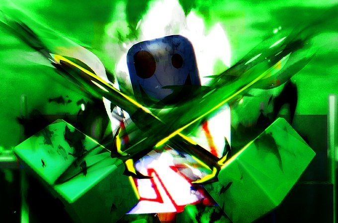
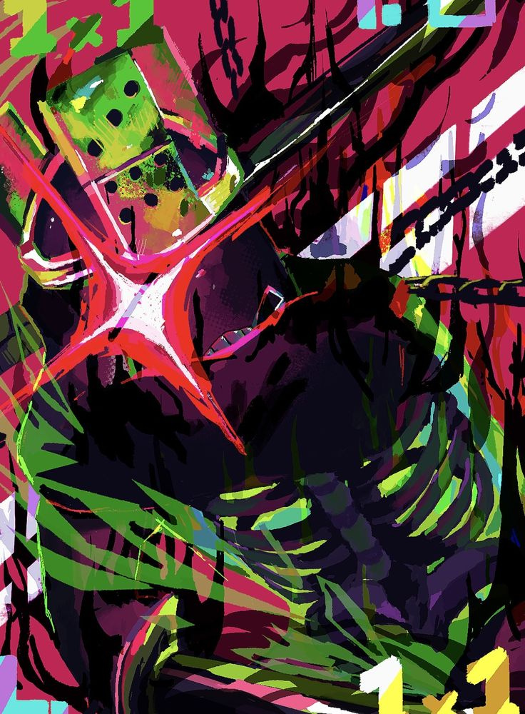
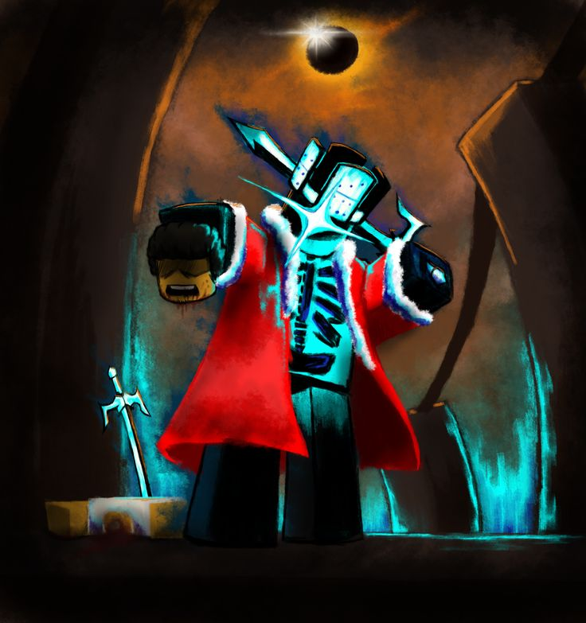

1x1x1x1 (currently roblox_user_81619) is an account that was created by Shedletsky Roblox Verified Badge, formerly Telamon on October 25th, 2007.

The account was created for the purpose of lore, following the first mention of 1x1x1x1 in the original description of The Necrobloxicon.
The account was then compromised on May 25th, 2010, and the username was changed to request59245234857238947 due to a name reset exploit.

As a result, the account was terminated.
The account was reinstated in July 2010.
Throughout the community, many rumors spread about 1x1x1x1 being an exploiter or a leader of an exploiting group.

Although the rumors about 1x1x1x1 have long since been debunked, many users continue to believe them, along with the rumors of John Doe and Jane Doe.
With 1x1x1x1's popularity within the Roblox community, Roblox has made references to him in media and events.